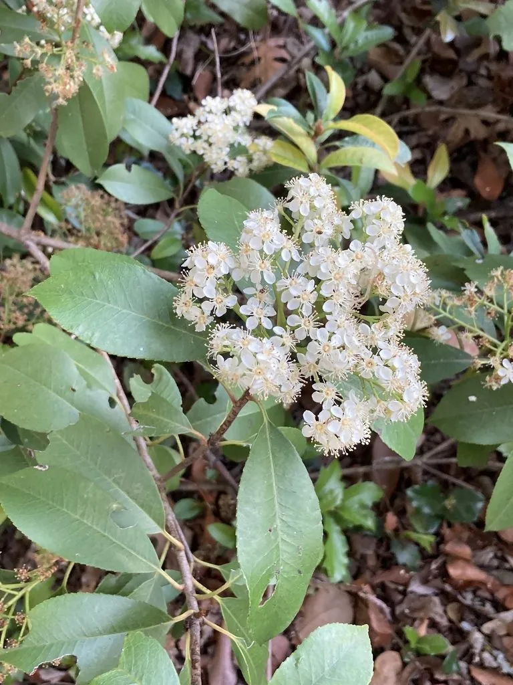

灌木与花木 · 植物界
石楠 Photinia serratifolia

中国南方常见的常绿灌木或小乔木，春季新叶鲜红、老叶翠绿，初夏开白色小花，是城市绿化与绿篱常用树种。
- 分类
- 门被子植物门纲木兰纲目蔷薇目科蔷薇科属石楠属
- 栖息环境
- 海拔 1500 米以下的山坡、山谷与城市绿地，喜光耐阴，适应性强
- 地理分布
- 中国陕西、甘肃至长江流域以南各地，日本、印度尼西亚也有分布
- 保护级别
- 暂无评估；中国未列入国家重点保护野生植物名录
物种志
石楠为常绿灌木或小乔木，高可达 12 m，树皮灰褐色；叶片互生，长椭圆形至倒卵状椭圆形，革质，边缘具细锯齿，春季新叶鲜红，后转深绿。花期 4–5 月，复伞房花序顶生，花白色、密集，花径约 1 cm，气味特殊，常招引蝇类传粉；果实为小梨果，球形，成熟时红色，冬季宿存。
石楠原产中国陕西、甘肃至长江流域以南各地，也见于日本、印度尼西亚，中国南方城市广泛栽培，喜光、耐阴、耐修剪，对土壤要求不严。春季红叶、夏季白花、秋冬红果，观赏期长，常被修剪成绿篱、球状或造型树，是城市道路与公园的常见绿化树种；木材可制器具，叶与根可入药。石楠花开时特殊的气味常被误认为“臭味”，这是它依靠蝇类传粉的适应特征。
形态与习性
- 株高可达 12 m，树皮灰褐色
- 花期4–5 月，花白色密集
- 果期9–11 月，小梨果红色宿存
- 光照喜光，也耐阴
- 水分耐旱，怕积水
- 土壤适应性强，各类土壤均可生长
- 主要用途绿篱与城市绿化、木材制器具、叶与根入药
趣味知识
- 石楠春季新叶鲜红，老叶翠绿，红叶期可持续数周，是常见的彩叶绿化树种。
- 石楠开花时气味特殊，主要靠蝇类传粉，因此开花时常有苍蝇聚集。
- 石楠耐修剪，常被修剪成绿篱、球形或各种造型树。
- 石楠秋冬结满红色小果，可宿存枝头，是鸟类冬季的食物。